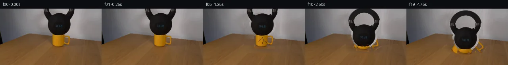

![首帧]()

Round 00
2026-11-05T10:35:13.333178+00:00像素候选变化代码 +265/−0inspection 更新
pixels 485cf9d9ee9316db · code 2657cb068d9ccda6
查看本轮 generate.py 真实 diff
--- previous/generate.py +++ current/generate.py @@ -0,0 +1,265 @@ +from pathlib import Path + +import numpy as np +from PIL import Image, ImageDraw, ImageFilter + +from artifact_io import save + + +ROOT = Path(__file__).resolve().parent +W, H = 256, 144 + + +def rgba_over(dst, src_rgb, alpha): + """Alpha composite float alpha over an RGB uint8 array.""" + a = np.clip(alpha, 0.0, 1.0)[..., None].astype(np.float32) + out = dst.astype(np.float32) * (1.0 - a) + src_rgb.astype(np.float32) * a + return np.clip(out + 0.5, 0, 255).astype(np.uint8) + + +def inpaint_backdrop(first): + """Fill the setup area by row-wise interpolation from uncontaminated sides.""" + out = first.copy().astype(np.float32) + x0, x1, y1 = 103, 193, 113 + xx = np.arange(x0, x1, dtype=np.float32) + u = ((xx - x0) / (x1 - x0 - 1))[:, None] + for y in range(y1): + left = np.median(first[y, 92:103].astype(np.float32), axis=0) + right = np.median(first[y, 193:204].astype(np.float32), axis=0) + row = left[None, :] * (1.0 - u) + right[None, :] * u + + # Reuse only the local high-frequency residual from a clear strip. It + # avoids a conspicuously flat repair while preserving row illumination. + strip = first[y, 45:101].astype(np.float32) + smooth = np.median(strip, axis=0) + residual = strip - smooth[None, :] + texture = residual[(np.arange(x1 - x0) * 7 + y * 3) % len(strip)] * 0.20 + out[y, x0:x1] = row + texture + return np.clip(out + 0.5, 0, 255).astype(np.uint8) + + +def ellipse_support(cx, cy, rx, ry, feather=0.08): + yy, xx = np.mgrid[:H, :W] + q = ((xx - cx) / rx) ** 2 + ((yy - cy) / ry) ** 2 + return np.clip((1.0 + feather - q) / feather, 0.0, 1.0) + + +def make_cutouts(first, backdrop): + yy, xx = np.mgrid[:H, :W] + diff = np.linalg.norm(first.astype(np.float32) - backdrop.astype(np.float32), axis=2) + + outer = ((xx - 149.0) / 40.0) ** 2 + ((yy - 5.0) / 37.0) ** 2 + inner = ((xx - 149.0) / 26.0) ** 2 + ((yy - 5.0) / 24.0) ** 2 + ring = (outer <= 1.10) & (inner >= 0.90) + body = ellipse_support(149, 39, 31.5, 30.5, 0.13) > 0 + base = (xx >= 132) & (xx <= 166) & (yy >= 55) & (yy <= 69) + bell_support = (ring | body | base) & (yy <= 70) & (xx >= 106) & (xx <= 191) + bell_alpha = np.clip((diff - 4.0) / 19.0, 0.0, 1.0) * bell_support + # The center is fully opaque; the difference-derived alpha remains useful + # only along the antialiased outer contour. + solid_body = ellipse_support(149, 40, 29.8, 28.7, 0.10) + bell_alpha = np.maximum(bell_alpha, solid_body * (yy <= 67)) + + f = first.astype(np.float32) + yellow_score = (f[..., 0] - f[..., 2]) + 0.55 * (f[..., 1] - f[..., 2]) + mug_roi = (xx >= 128) & (xx <= 180) & (yy >= 61) & (yy <= 102) + mug_alpha = np.clip((yellow_score - 34.0) / 38.0, 0.0, 1.0) * mug_roi + return bell_alpha.astype(np.float32), mug_alpha.astype(np.float32) + + +def shifted_layer(rgb, alpha, dy): + out_rgb = np.zeros_like(rgb) + out_a = np.zeros_like(alpha) + if dy >= 0: + out_rgb[dy:] = rgb[: H - dy] + out_a[dy:] = alpha[: H - dy] + else: + out_rgb[:dy] = rgb[-dy:] + out_a[:dy] = alpha[-dy:] + return out_rgb, out_a + + +def hidden_handle_layer(dy): + """Complete only the part of the handle whose source y was above frame 0.""" + yy, xx = np.mgrid[:H, :W] + sy = yy.astype(np.float32) - float(dy) + outer = ((xx - 149.0) / 40.0) ** 2 + ((sy - 5.0) / 37.0) ** 2 + inner = ((xx - 149.0) / 26.0) ** 2 + ((sy - 5.0) / 24.0) ** 2 … diff truncated; 178 more lines …